在冬天，刮风的天气是最容易让人感冒的了。那怎么应对呢？
首先，在刮大风的天气里，老年人或者是比较小的孩子出门，一定要让他们戴上帽子。有的家长怕小孩子着凉，就给他穿得厚厚的，这样反而容易捂出一头汗，更容易感冒或者上火。
有些小婴儿不会说话，您给他捂得厚了，他就用哭闹来表达，有的家长以为孩子爱哭，实际是您给他穿多了，让他很不舒服。孩子平时穿衣服要比大人少穿一件，这样才合适。
其实，我们要重点保护的是他的头部。因为只要小孩儿一活动，他的额头就会微微出汗，如果再一吹风，孩子就很容易感冒。
我儿子小的时候，我给他买的外套都是带兜帽的，如果刮起风来，随时随地都可以把兜帽翻上来护住头部，孩子就不容易感冒了。
老年人在大风天出门没戴帽子，特别是血压高的老年人，回家以后很容易觉得头晕，甚至是晕得天旋地转的，起不了床。这时候，您千万不要把这种情况跟感冒症状混淆在一起，最好是去医院检查一下老年人是不是属于中风的高危人群。如果排除了中风的危险，那么可以用一个小方子——桂圆壳煮水来调理。
预防感冒，防风防汗是被动防御，我们还需要主动防御，就是提高身体的抵抗力。一年四季预防感冒的方法都不一样，当然预防感冒的饮食方子也不一样。
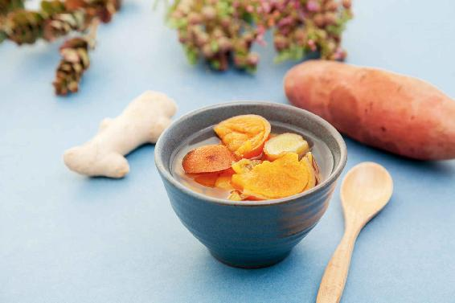
生姜红薯汤
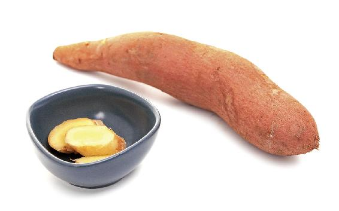
原料：红薯250克，生姜3片。
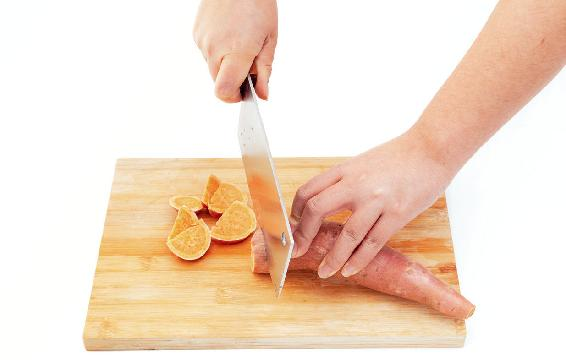
做法：
1.把红薯切成小块儿，然后冷水下锅煮开。
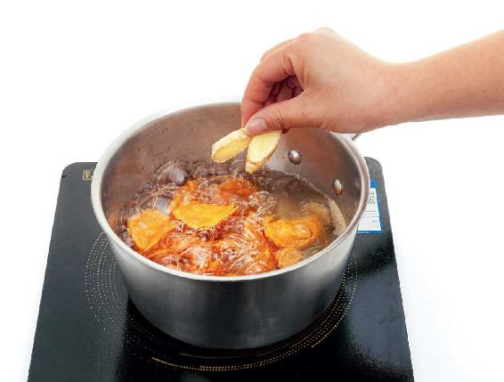
2.把生姜放进去，一起再煮20分钟起锅。
允斌叮嘱：
1.姜不要去皮。姜去皮是治感冒的，而预防感冒则不需要去皮，避免人出太多的汗。
2.煮的时间要长一点儿。生姜煮的时间短，是用于治感冒的，它的作用是走表，偏于发汗。而生姜煮的时间长一点儿的作用是走里，偏于暖胃。所以，脾胃虚寒的人喝这道汤，还可以再稍微多放一点儿生姜，这样调理脾胃的作用就会更强。
冬天如何预防感冒？有一道很简单但是很有效的食方推荐给大家，就是生姜红薯汤。它可以补气血、润肠胃，让人的全身都暖起来。
每年立夏，我都会推荐大家喝两个月的姜枣茶，它可以暖脾胃、排毒，预防夏天的常见病。
有人问我，能不能在冬天也喝姜枣茶。其实，在冬天您不如喝生姜红薯汤，它相当于一道温和版的姜枣茶。而且，在冬天如果不搭配其他食材，单独地喝姜枣茶，有些人会上火。这是因为人体的脏腑在夏天和冬天是不一样的：夏天人体的血液都在体表，而内里的脏腑一片虚寒，脾胃处于缺血的状态；冬天恰好相反，血液都回流到了内里，所以冬天如果饮食不当，我们的肠胃容易积存内热。
煮姜枣茶，我建议大家是只喝水，不吃枣肉。为什么呢？因为枣皮和枣肉不一样，枣肉吃多了可能生湿热。
在冬天预防感冒，您可以给全家人做生姜红薯汤，既可以温补，又不容易上火，对孩子更是适合。因为小孩儿吃对了红薯，比吃红枣的效果还要好。
红薯是一种非常滋补的食物，它的营养跟红枣非常类似，都能健脾胃、补气血。但红枣吃多了会生湿热，而红薯不会。
这道生姜红薯汤就像立夏时喝的姜枣茶一样，您可以从立冬开始喝两个月，这样不仅能温补脾胃，预防风寒感冒，还不容易上火。对于已经感冒的人，也是一道很好的“病号汤”。
所以，无论是在风寒感冒之前，还是在风寒感冒之后，我们都是可以来喝这一道汤的。
读者评论：
心怡_vb：生姜红薯汤，去年喝了就很好，加了生姜，胃寒的我吃了也暖暖的。
戒掉对你的爱1：基本上每天早上给孩子喝红薯姜汤，感觉孩子爱吃饭多了！
小屁肥肥熊：红薯通便秘的效果非常好！才喝了几次生姜红薯汤，现在每天早上起床都能顺畅排便，而且是成形的那种。
果子_h3j：我每天都让孩子喝一碗生姜红薯汤，这几天她同班的几个同学都感冒发热了，她一点事儿也没有。红薯汤的作用太强大了，感谢老师！
小梅_qf：每天早上喝完红薯汤，胃里暖暖的，身体暖暖的，一点也不会感到胀气，味道也不错。
关于发热，有一种说法流传很广，就是一个人应该隔一两年发一次烧，这样才能杀灭体内的病毒，不会得大病。
这种说法其实是有点问题的，发热的确是人体的一种自我保护功能。当我们体内有病邪的时候就会发热，如果体内没有病邪，人就不会发热。所以，没必要为了杀灭体内的所谓“病毒”而人为地去制造发热。
有人认为，从不发热的人容易得大病，这是不确切的。我们应该这样来理解，一个人得了感冒，又不怎么发热，这说明他的身体抵抗能力比较弱，对病邪的反应比较迟钝，不能调集身体的免疫力对抗病毒。这种情况在老年人身上比较明显。
您会发现，小婴儿非常容易发高热，动不动体温就到40℃。而老年人极少发高热，如果老年人发高热了，那是非常可怕的事情。
对于发热，可以打这样一个比方，发热就像是人体调兵遣将消灭敌人的过程，敌人就是病毒。
两军交战，我们应该帮哪一方呢？当然应该是帮助身体的军队去对抗病毒的军队。但在现实生活中，很多人往往帮错了对象，一发热就慌了，急于去退热，这种行为就相当于帮助病毒的军队去消灭身体的军队。实际上，我们应该帮助身体的军队去对抗病毒的军队，把病毒驱赶出去。
消灭敌人（病毒）的战场就在自己的身体里面，所以我们要在赶走敌人的同时，注意保护好自己的家园。如果退热方式不恰当，就会留下一片狼藉的战场，影响消化系统、肺和心脏的功能。最常见的后遗症就是退热后会一直咳嗽，半个月都不见好。
更严重的后遗症是心肌炎、中耳炎、风湿性关节炎。对于小孩儿和年轻人来说，这些后遗症可能要在十几二十年以后才显现。对于年龄特别大的人来说，不恰当的退热，很可能就是一道鬼门关。
退热不当还容易引发病毒性心肌炎，所有年龄段的人都有可能中招，而且非常危险，有可能致命。
所以,选择退热的方法，不能只看退热的效果和速度，还要看是否能够帮助身体尽快恢复机能，不留下后遗症。
感冒引起的发热有两个阶段，要用不同的方法来调理。
第一个阶段是低热，往往是在感冒初起，只出现了上呼吸道感染的症状。这时候，我们不要急于退热，只按风寒感冒或者风热感冒来辨证调理就可以。
第二个阶段是高热，到这个程度，已经不是单纯的外感了。在外感阶段，也就是第一阶段，病毒的军队是在边疆侵扰，而发高热的时候，也就是第二阶段，病毒的军队已经侵入身体的“中原地带”——脾胃了。这就是您在发高热的时候，一般都感觉没有胃口，觉得胃里很不舒服，甚至恶心、呕吐的原因。
假如病毒的军队在“中原地带”没有被消灭，而是潜伏了下来，就会危害心脏的安全。当战火烧到心脏的时候，人就会出现神志昏迷，甚至抽搐的情况。这一点在小孩子发高热的时候很明显。
很多家长一看孩子发高热就慌了，生怕孩子的脑子被烧坏了（其实只有脑膜炎才会伤害到大脑，而感冒发热是烧不坏脑子的）。这时候，如果您着急用冰敷或者贴退热贴等物理降温的方法来给孩子退热，就相当于把身体内对抗病毒的军队给撤走了。表面上战火是平息了，但病毒并没有被消灭，却长期潜伏在体内，这会侵害到孩子的鼻子、耳朵、心脏和消化功能，留下一个长期的损伤。
有些孩子抵抗力强，身体会再组织一次反攻，那么孩子就会再次发热。家长就会很困惑，为什么孩子热了又退，退了又热？实际上，这是孩子的身体在一次又一次地试图杀灭病毒。这样反复折腾以后，会对孩子的身体造成长期的伤害，有一些伤害要等到他长大成人之后才会变得明显，而有一些伤害在儿童期就会很清楚地看到，特别是对消化系统的伤害。
每次我现场讲座的时候，都会有很多家长带着孩子来，希望我给孩子看一看，为什么孩子营养不良，吸收能力很差，或者是胃口不好，不爱吃饭，脾胃功能虚弱？
其实，我只要仔细问一问就会发现，这些孩子都有一个共同的特点——感冒发热的时候，家长盲目地给孩子退热，使得孩子的脾胃被退热药给伤害了。
一定要记住，发热是身体在调兵遣将对抗入侵的病邪。这个时候您千万不要盲目退热或者胡乱用药，以免“杀敌一千，自损八百”。还有就是您在发热期间所吃的每一口食物，所喝的每一口药茶，都应该是为自己身体的军队添把火、助把力，同时还能够修复我们脏腑的机能。
在感冒发热的两个阶段，不同年龄段的人发热的过程是不一样的。
小孩子发热，很容易从低热迅速过渡到高热；年轻人发热，一开始低热，慢慢地体温越来越高；中年人和老年人有时候不发热，严重了就低热，很少有高热的。如果连续几天低热不退，说明病已经深入到脾胃了。
1.低热没有合并扁桃腺炎，可以喝葱姜陈皮香菜水调理
如果您感冒发热好几天了，但一直体温不高，也没有合并扁桃腺炎，那您就可以在治疗重感冒的葱姜陈皮水里，加一把香菜进去，一起煮水来喝，这样就可以退热了。
因为香菜能帮助脾胃驱赶病毒，恢复脾胃的功能。这个方子对感冒后轻微发热，并伴有恶心、呕吐症状的人特别见效。
2.藿香正气水滴肚脐，可以给孩子退低热
如果您没有用陈皮、香菜这些东西来食疗，那您可以去药店买一盒藿香正气水来救急。
关于藿香正气水，很多人以为它是解暑的，这是不对的。包括我去一些药店看，冬天他们都不卖藿香正气水，以为只有夏天才能用得上。这是一个很大的误解。
藿香正气水是治疗暑湿型感冒的，同时它也治疗由感冒引起的脾胃症状，如恶心、呕吐、拉肚子。所以，一年四季都有可能用得上它，并不仅仅是在夏天才用。
其实，藿香正气水还有很多的妙用，比如，小孩子在体温不是非常高的情况下，给他灌药又灌不下去时，您也可以用藿香正气水滴肚脐来给他退热。
这个方法，有的家长用了觉得效果很好，有的家长认为效果没那么好。仔细一问，才发现他们用的时候有一些偏差。有些家长把藿香正气水滴在棉球上，然后再往孩子的肚脐里塞，这样一来，大部分藿香正气水都被棉球吸收了，而孩子肚脐吸收的药量很有限。
怎么做才正确呢？
首先您让孩子在床上躺平，然后把藿香正气水直接滴在他的肚脐里，滴到快要溢出来（差不多一两滴也就够了），这样药量才够。然后让孩子不要动，也不要翻身，慢慢地等着药被吸收掉。
这个方法之所以有效，是因为肚脐是人体很重要的一个穴位——神阙穴。通过这里，药性能够被很好地吸收，可以直接作用于脾胃系统，让孩子很快退热。
3.感冒引起的扁桃体发炎、咽喉肿痛，可以用双黄连口服液；扁桃体肿痛，可以用中成药板蓝根
如果感冒引起了扁桃体发炎、咽喉肿痛，这个时候发热了，我们不用藿香正气水，而是用双黄连口服液来退热。对于扁桃体肿痛，您可以用中成药——板蓝根来解决，也可以用牛蒡来食疗。
读者评论：藿香正气水滴肚脐，给孩子退热最简便
蜜糖果：藿香正气水滴肚脐，给孩子退热最简便、最便宜的方法。一支没用完，孩子就好了，大爱中医！
棒棒猫_aw ：昨天喉咙痛、流鼻涕、打喷嚏，低热37.7℃，时冷时热。喝了一瓶藿香正气水，昨晚又喝了双黄连口服液，今早起来热就退了，感恩老师。
允斌解惑：有过敏性湿疹加脾虚，用藿香正气水擦
枫叶：我家孩子腿和胳膊上经常痒，红一大片，还有痂痂，医生说孩子脾虚。有过敏性湿疹加脾虚，可以用藿香正气水擦吗？
允斌：可以。
感冒发热如果体温很高，并且高热不退，这说明病毒已经深入到脾胃，而且隐隐地对心脏也有威胁了。
心火在烧，体温就特别高。这个时候，人体的心、肺、肝、胆、胃都有了火，简直是一片硝烟弥漫的战场。
这时候，咳出来的痰一定是黄色的，因为有肺火；嘴里没有味道，感觉发苦，是因为肝、胆有火；有的人会呕吐，因为有胃火；有的人会头昏昏的，甚至说胡话，因为心火太重。
面对体内到处燃烧的战火，如果我们只是冰敷前额、用发汗的退热药，那么对五脏六腑来说，真的是太不够了。这个时候，如果您用抗生素，也只能是杀灭细菌，对五脏六腑没有修复作用。所以，我们要用一个方法，让它既能帮助五脏六腑排出病毒，又能修复它们的机能，平息战火。如果您是我的老读者，一定已经猜到了，我讲的是我家几代人都在用的一个退热小秘方——蚕沙竹茹陈皮水。
十几年前，我公布这个方子之后，很多读者都给我留言，分享他们的使用经验和心得，以及点赞方子好用。
有一位著名的绘本画家，他的笔名叫速写本子，他的女儿木朵有一次高热，他到处求助，然后他的好几位朋友竟然不约而同地向他推荐了这个退热小秘方。他马上去药店把这几样原料买了回来，做好后，试着给孩子喝了下去。结果孩子喝下后，睡了一个午觉，起来后就退热了。这位爸爸非常欣喜，觉得这效果也太不可思议了，于是他就把女儿生病到治愈的整个过程画成了漫画，发表在微博上。之后，由我的读者分享给了我，我才知道了这件事。
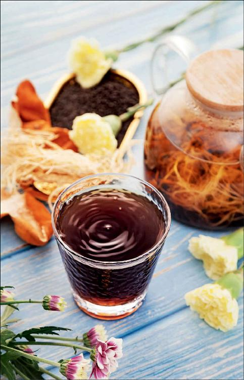
蚕沙竹茹陈皮水
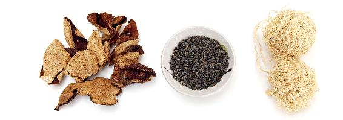
原料：蚕沙、竹茹、陈皮各30克，小孩儿可以减半，小婴儿可以减成三分之一（10克）。
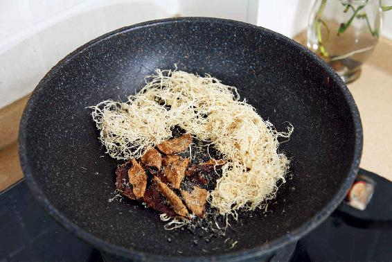
做法：
1.把陈皮洗干净，和蚕沙、竹茹一起放入锅中。
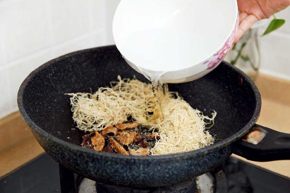
2.加冷水，开火，水开以后煮3～5分钟就可以了。（这个水您可以煮两遍，把第一遍煮好的水滤出来，然后再加入冷水，煮一遍，原料不用换。）
允斌叮嘱：
1.一般的人喝一次就可以退热，如果比较严重的可以喝2～3次。
2.烧退以后就不要再喝了。
3.此方子只适用于大人发热超过38.5℃，儿童发热超过39℃以上的高热。如果您体温没有到这个程度，用前面讲过的调理低热的方子就行。不能随便用这个退热的方子，因为高热和低热是病的两种不同程度，所以用的方法也会不同。
我一看他这个漫画画得真是好，把这个秘方的材料、用法、用量，还有孩子喝下去之后的效果，都很生动地描绘出来了。
这个秘方最早是公布在我的《回家吃饭的智慧》这本书上的，这本书修订再版的时候，征得了“速写本子”的同意，我把他画的漫画附在了书里。
假如家里的孩子发热，如果他觉得这款退热药茶不是那么好喝，您不妨先给孩子看一看漫画，让他知道其中的退热原理，说不定他就乐意喝了。我也想借此机会感谢“速写本子”，虽然我和他迄今为止没有见过面，也没有通过电话，但是我非常感谢他，还有所有热心传播这个秘方的读者。因为有你们的传播，使得更多人受益。
十几年前，我公布了这个退热秘方，结果有无数的人给我留言，说给孩子用了这个方子，第二天早上烧就退了，上学了，他们就到处分享这个方子。有的朋友还把这个方子抄下来，贴在办公桌上，只要是同事的小孩儿一发热，就来找这个配方……
这个方子是我的曾外祖父，也就是我外婆的父亲传下来的，在他之前又传了几代，我们现在已经不知道了。从曾外祖父到现在是四代人，这个方子我家用了一百多年。
这个方子还真是一个秘方，过去家里一直是秘不示人的，只是用来给家人治病。我在读过的古代医书中，也没有看到过关于这个方子的记载。我使用互联网检索，在古今的医书中也没有检索到这个方子。
这件事让我很感慨。一方面是很感谢家里的前辈，能够一代又一代地把这个独一无二的秘方给传承下来；另一方面是觉得中国古代的医学这么博大精深，不知道有多少秘方，在战乱中或在家族的离散中失传了，真的是非常的可惜。
几经思考，我把家里的老人请到了一起，征求他们的意见，希望他们能够同意我把家里的一些秘方给公布出来，让大家都能够受益。我觉得这才是对这个秘方最好的传承方式。另外，通过更多的实践，或许能够对这些方子做进一步的改进，或者是拓展它的使用范围，这就是传承和发扬。
在这里，我要感谢家里的几位长辈——我的两位姨妈、舅舅，还有我的母亲，他们不仅同意公开这些秘方，而且还分享了他们在使用秘方过程中，采用不同品种的材料测试和对比出来的效果，从他们的实践经验中，我可以看出使用道地材料的重要性。所以有些小方子，虽然看起来很简单，但是材料很讲究，如果您用得对，那一剂就见效；如果您用得不对，那就有可能拖延一段时间。
蚕沙竹茹陈皮水这个秘方，它最大的好处就是一剂见效，高热严重的服用也没有超过三剂的，比起一般的退热药效果好得多。
第二大好处就是非常平和、安全，下到8个月大的婴儿，上到80岁的老年人都可以使用。
第三大好处就是非常方便家庭使用。它不像一般的方子需要精确到克，您急用的时候，抓一把都可以。以前我家里准备这个方子的原料，每一种原料都是一麻袋，急用的时候各抓一把。
有些人问我，用这个方子来退热，需不需要区分风寒感冒和风热感冒——不需要。因为身体低热期间，风寒和风热还是停留在外感阶段，所以感冒初期的时候，会有风寒感冒、风热感冒之分。多数人往往都是风寒感冒起头，然后转变为风热感冒。再进一步，病毒深入到脏腑，这就不是单纯的外感了，因此也就不再需要区分风寒感冒和风热感冒了。
读者评论：用这个退热方子煮水，给小婴儿泡澡，也好用
心怡_vb：这个退热方太神奇了，喝下去1小时后人就清醒了，老公也被我深深地折服了。现在不管我煮什么，他都乖乖地吃，再也不说我“谋害亲夫”了。
米朵儿_04：前两天考试，因压力太大，我发热了，39.5℃。我给自己煮了一碗蚕沙竹茹陈皮水，一小时后体温恢复正常，头也都不痛了，真是一个屡试不爽的神奇方子！感谢陈老师无私分享！
小钱_rc：我有次高热41℃，喝了两次蚕沙竹茹陈皮水就好了，没有留下感冒的小尾巴。
幸福很简单_7l：女儿半夜发热，特别难受，喝了蚕沙竹茹陈皮水后，第二天早上就退热了，而且精神还特别好，也没耽误学习。
玫瑰花：这个方子我亲自用过，真的很管用，谢谢老师的分享。老师用的都是最简单、最有效的食材，遇见老师是我们的福气。
中国结：这个方子太神奇了，现在我家里无论大人、小孩发热都用这个方子。
茄子Helen：小婴儿不爱喝药，用这个方子给他煮水泡澡，也好用。
进无止境_ex：这个退热方子确实好用。我之前高热38.5℃，浑身痛，我就去药店买了蚕沙、竹茹、陈皮，回家煮水喝。前半夜还浑身痛，后半夜就不痛了，早上起来一量体温正常了。
相逢_e1：感谢允斌老师家的家传秘方。我给孩子用了一剂就见效了。一觉醒来，孩子头上凉凉的，而且胃口大开，直喊饿，娘俩别提多高兴了。这个方子可以煮两遍。
笑素颜朝天_h8：确实很神奇，家里常备药，比吃那些退热药不知强多少倍，对身体还没有伤害，老师棒棒的。
如果一种退热药，您吃了之后很快退热，那是有点可怕，因为可能会伤及心脏。
蚕沙竹茹陈皮水非常平和，它是通过调理脏腑的功能，让人体自己退热，因此有一个过程。
一般来说，您在晚上睡前喝一碗，早上起来热应该就退了，整个人会感觉到神清气爽，这个时候基本就没什么问题了。如果是较严重的高热，您可以喝2 ~ 3次，热一退就不要再喝了。
如果是小婴儿，他一次喝不了太多水，您在制作过程中最好是少放一点儿水，煮得浓一些，然后分成几次喂给孩子（每3小时一次），直到烧热为止。
其实，只要您所用的三种原料没问题，对一般人来说退高热是不会超过三剂的。再进一步说，如果您用的原料道地，对于感冒合并肺炎所引起的高热也是有退热效果的。
在读者的反馈中，我发现有一些朋友对原料不太了解，导致在使用中出现了一点偏差，退热的速度变慢了，或者是烧退了，却留了一个小尾巴——咳嗽。
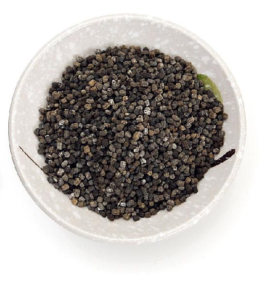
1.蚕沙有什么用？如何选择？
蚕沙虽然是一味中药，但日常生活中也能用到。它可以做成蚕沙枕头，枕着睡觉可以清肝、明目。
蚕沙其实是很干净的，养过蚕的人都知道，蚕的一生都待在养蚕的竹匾里，只吃新鲜的桑叶，完全不沾人间尘土。其实，蚕沙就是桑叶的残留物，是结合了动物和植物的精华的，没什么异味。
蚕沙入肝经，祛风、活血；入脾经，燥湿、止泻；入胃经，和胃、化浊，这些作用综合起来就不得了。所以，在这个方子中，用蚕沙能退热、止吐，还能解除由于感冒发热引起的头痛和全身疼痛。
蚕沙，最好是用晚蚕沙，它的效果会更好。
2.竹茹有什么用？如何选择？
竹茹是竹子的中间层，把竹子最外面一层绿色的外皮刮掉，露出里面青白色的部分，一条一条地刮下来，这就是竹茹。
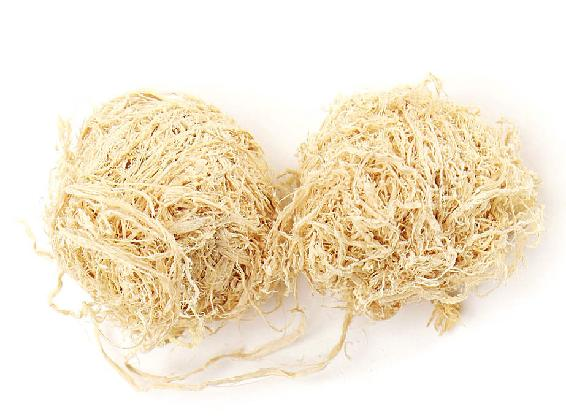
竹茹的作用是清火，而且主要是清人体上焦的火，如心火、肺火、肝火、胃火。
感冒高热，心、肺、肝、胃都会有火，而竹茹对这几个地方的火都有清除作用。竹茹既可以加强退热的作用，还可以止吐、化痰。
曾经有读者给我留言，说他去买竹茹，人家告诉他竹茹是大寒之物，吓得他不敢买了。其实，这是把竹茹和竹沥给混淆了。竹沥是用火烤竹子的时候流出来的汁液，那是寒的。但是竹茹很平和，它安全到孕妇和小孩儿都可以用，所以您不用担心。
竹茹有品种和等级的区别。上好的竹茹的标准：颜色是淡淡的黄绿色，闻起来有竹香。
如果您买回来的竹茹闻起来不仅没有竹香，反而还有一种奇怪的霉味，那很可能是用加工竹工艺品时剩下的废竹丝制成的。因为在加工竹工艺品前，往往要先把竹子在水里浸泡一段时间。这样刮下来的竹丝，因为含有水分，又积压在一起，晾干后往往会有一种霉味。
还有一种不好的竹茹，虽然没有霉味，但颜色发白，这很可能是内层皮做的，这样的竹茹也可以用，当然，它比不上好竹茹的保健效果。
如果您想确保退热、化痰、止咳的效果更佳，可以选择顶级的竹茹。
《中国药典》规定，入药用的竹茹，必须由淡竹、大头典竹、青竿竹的竹丝制成。但实际上，现在市面上很多竹茹是用毛竹的竹丝制成的。因为毛竹是种植面积最大的品种，也是做竹工艺品时用得最多的竹子。
根据我的经验，这些毛竹做成的竹茹，也不是全都不可以用，有一些也有一点效果，但不够好，不符合《中国药典》的要求。
入药来讲，竹茹还是以淡竹为佳。顶级的竹茹，应该选择生长期一年的嫩竹，在冬天的时候采下来，只取刮掉外皮之后的头一层青皮。再往里刮，品级就要次一等了。
我在山里边指导工人做过竹茹。它不太好用机器加工，得用手一点一点削皮刨丝。一个人花费一天的时间，耗用5千克的竹竿，才能有不到500克的新鲜竹茹，晾干以后分量就更轻了。
这样做出来的顶级竹茹，您捧起来一闻，那种竹香真是沁人心脾，泡水来喝，也是淡淡的黄绿色，很香。这个跟我们平时买的竹茹真的是太不一样了。
3.陈皮有什么用？如何选择？
陈皮的作用非常广泛。在这个方子里，它的主要作用是散寒、化痰、止咳，调理上呼吸道感染，而且还能温胃、止呕吐，缓解消化不良。
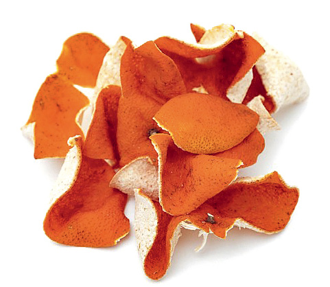
很多读者用了这个方子以后，感觉效果很神奇，不仅能很快退热，咳嗽也好了，胃口也开了。
也有一部分读者反馈，他们觉得喝一次蚕沙竹茹陈皮水还不能退热，需要多喝几次。咳嗽也不能马上止住，得过一阵子才能好。
原因是什么呢？我发现是原料的问题，而且主要是陈皮。
我在全国很多的电视台录制过节目，大家都喜欢我讲的一些关于陈皮的内容。每一次我用陈皮做道具时，发现工作人员从药店买回来的陈皮基本上都是伪品和次品，如蜜橘皮、橙子皮、柑皮，好不容易挑出几片真正的陈皮，存放的年份还不够。后来我干脆从自己家里拿陈皮去做道具。
自从我自带陈皮做道具后，陈皮成了香饽饽，每次节目录完后大家都争着抢着要拿回家去。用上好的川红橘制成的陈皮，习惯上称为川陈皮，这是陈皮的道地药材。如果您买不到这种陈皮，也可以去买广陈皮来代替。
广陈皮是茶枝柑的皮，产于广东。而陈皮这个药名，以前是专属于用红橘制成的陈皮。
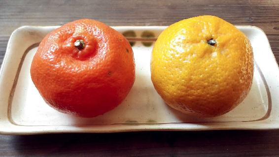
不管是川陈皮，还是广陈皮，用在这个方子里效果都很好。但假如说您买回来的陈皮掺有伪品，比如，混有蜜橘皮、橙子皮、柑子皮，这就不行了。因为蜜橘、橙子、柑子的皮是不可以制成陈皮的。
陈皮之所以是一味中药，是因为它含有非常重要的黄酮类活性成分，其中有两种：一种是川陈皮素，一种是红橘素。这两种活性成分可以抗氧化、抗菌、抗肿瘤，它们的含量决定了陈皮的品质和药效。
您从这两种成分的名字上也可以看出来，为什么陈皮要用川红橘制成。
用川红橘制成的陈皮，川陈皮素和红橘素的含量是最高的，其中川陈皮素的含量高于其他柑橘类水果的10倍以上，而红橘素的含量可以达到其他柑橘类水果的5倍以上。
如果您担心买不到好的陈皮怎么办呢？很简单，冬天红橘上市的时候，您买些红橘回来，自己剥皮、晾干，保存1年以上就是上好的陈皮了。
陈皮有一个特点，就是越陈越好，正所谓“百年陈皮，千年人参”。陈皮越陈越值钱，所以您不妨在家多保存一些。
其实，我家这个小方子所用的三种原料都是比较耐储存的，您可以在家多准备一些。我曾经试过，三种原料都用透气性好的麻袋盛放，过个七八年，拿出来煮水，还是有效果的。
经过多年的实践，我发现原料的品质、真伪，对方子的使用效果有影响，而原料存放时间的长短，对方子的使用效果没有影响。所以，您稍微花点心思去寻找道地的原料是值得的。
读者评论：家里要常备，确实很神奇
Erin-玲：昨天喝了一次蚕沙竹茹陈皮水，体温从39℃降到38℃，但是喉咙那里还是很痛，几小时后又煮了罗汉果和牛蒡，喝了以后感觉喉咙舒服多了，夜里基本没有咳嗽。早上起来，基本上退热了。
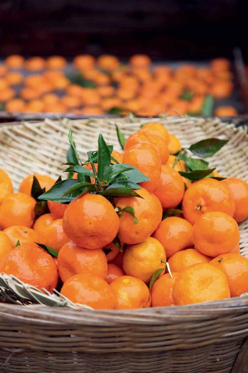